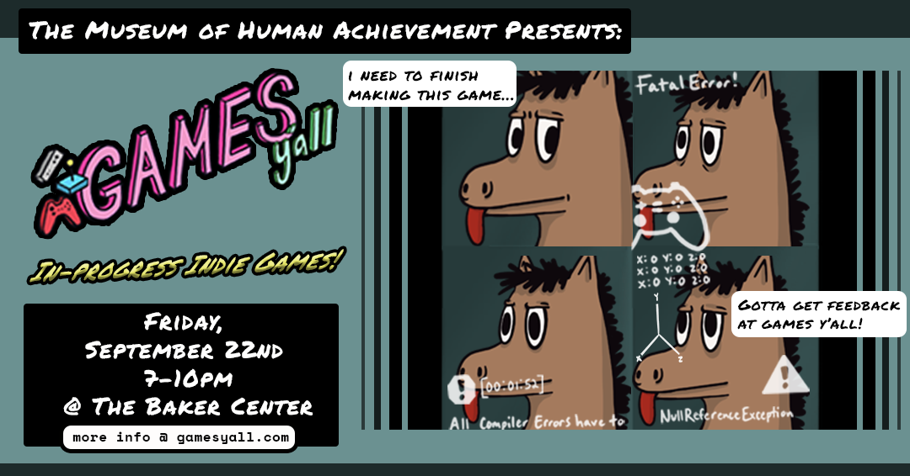
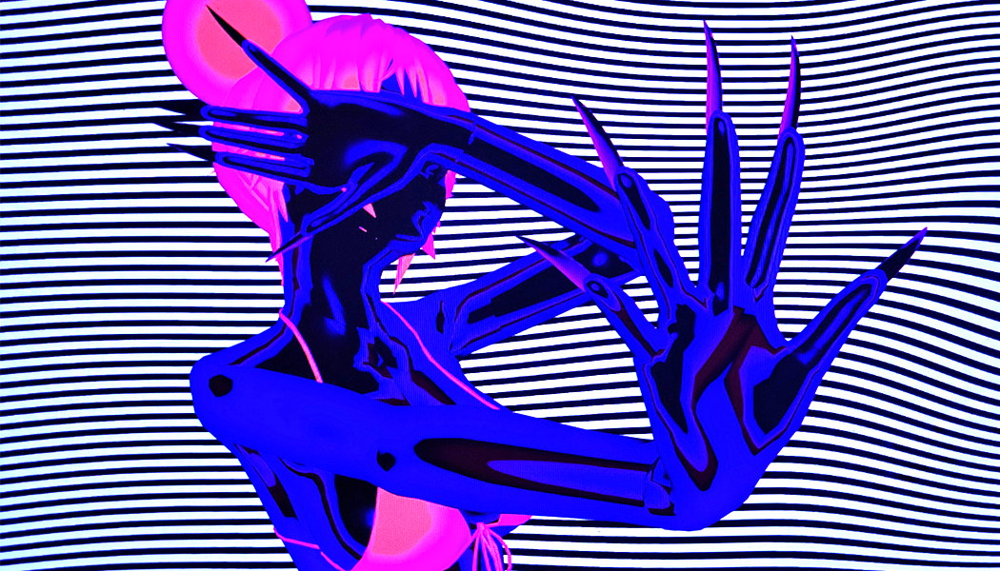
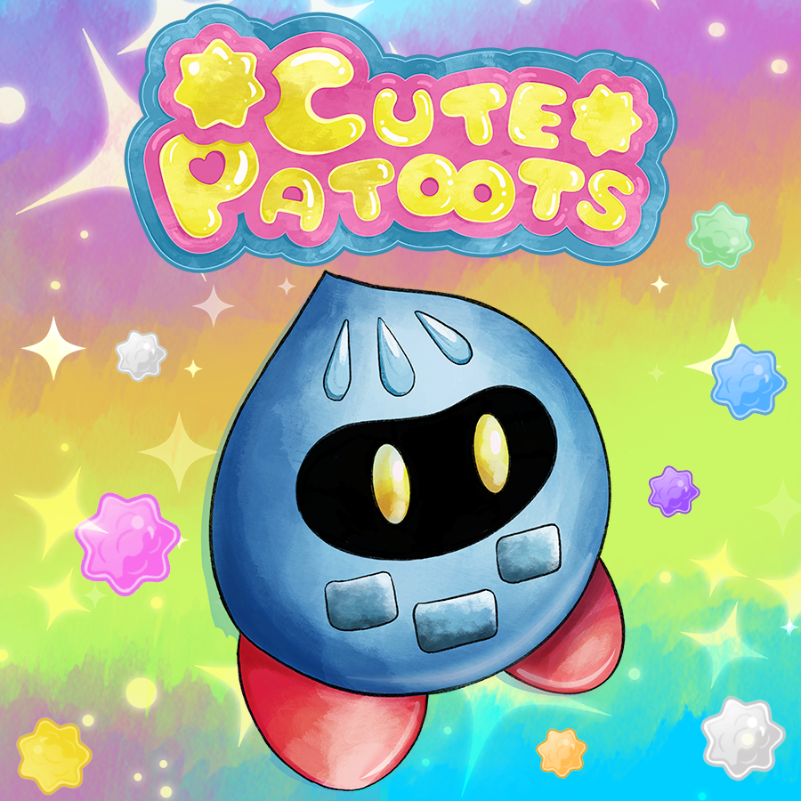
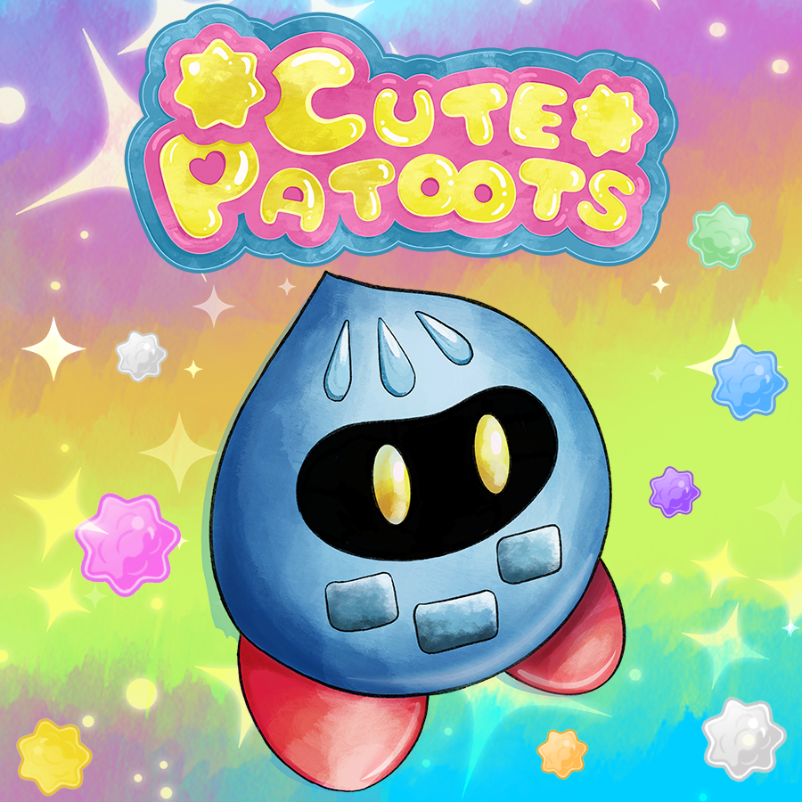
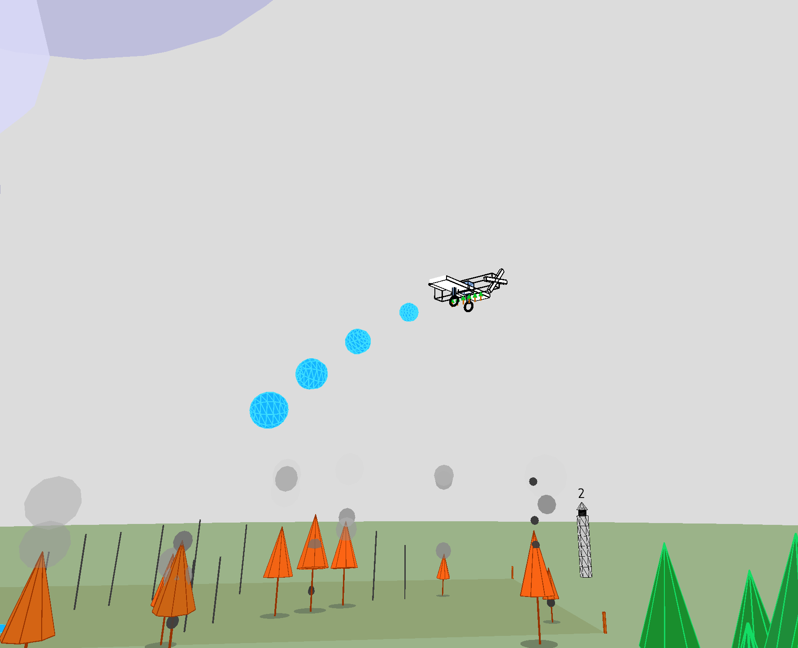

-
September Meetup
September 22nd, 2023 - 7-10pm
Baker Center Cafetorium 3908 Avenue B, Austin, TX 78751
🎟 Free admission, donations are encouraged! Please RSVP, walk ups are welcome.Games Y’all returns to the Baker Center Cafetorium! We’re inviting 15 game devs to share their in-progress indie game projects, come join us and explore their work.
You can talk to the makers, share some feedback, and experience a variety of games at different stages of development. This is a great opportunity to learn what goes into making games as well as giving valuable insight to the game developers in attendance.
Shoutout to Mighty Coconut for helping facilitate the space!Games Y'all
Games Y’all is a monthly meetup presented by the Museum of Human Achievement for indie devs, digital artists, and games fans. We showcase indie games and digital art projects from our local community and beyond. You can come to our meetups to play games, experience digital art, and connect with the local Austin games community.
The Museum of Human Achievement
The Museum of Human Achievement is a multi-disciplinary art space and non-profit organization in Austin, Texas. We cultivate new work, community, and vibe by providing radically affordable arts space to support artists and audiences in the creation of new ideas.
Venue + Parking
It's a big yellowish school building. Guests can park anywhere in the parking lot or street. The entrance door faces 39th street. There will be signs directing you from the parking area to the entrance! Look for traffic cones and folks gathering :) We'll have beer and non-alcoholic drinks available. All ages welcome, wristbands for 21+ who want to drink, ID check at the door. Please do not explore beyond our designated area for gathering!
Health Details
This event will be indoors. We strongly encourage that everyone be vaccinated or have recently tested negative for COVID. Do not attend if you feel ill or were recently exposed to COVID. Hand sanitizer and masks will be available. Masks are welcome!
Games This Month
No Longer Human
No longer human is a high-energy action game with expressive, freeform combat that encourages aggressive, stylish play set in the digital bedrock of the collective human psyche. You assume the role of Tsunono, a disgraced vocaloid idol, returning from a decade long exile to destroy the world.
Content warning: Flashing lights and excessive blood.
0801 LLC is a band of psychics developing hardcore software for the terminally disenfranchised.Developer: 0801 LLC
@n0_longerhuman
 
Cute Patoots
Smile your way through all life’s problems in this action platformer!
Patrick Randazzo is a queer professional who works in educational product design and loves retro, experimental, and serious games.Developer: Okipoki Games
Awful Tree Farmer
You have an airplane and five minutes to plant and grow as many trees as you can. Part flying game, part farming sim, part stress management - can you keep lightening from burning down your forest? Points are awarded for fully grown trees spread evenly across your three fields. This game is a work in progress. It is built entirely with P5.js.
Joe McKay is an artist who has be making game-based projects since the late 90s. He teaches at SUNY Purchase college and spends time between Austin and New York.Developer: Joe McKay Studio

Nimrods
Forge an explosive arsenal in NIMRODS, the reverse bullet hell roguelite that combines gun crafting and survivor action. Blast through waves of deadly aliens and unlock new characters. Craft powerful weapons on your mission and research them to develop new tech and become the ultimate space hunter!
NIMRODS distinguishes itself by enhancing the foundation of survive-em-up games, presenting a profound adventure marked by substantive exploration within a profoundly engaging meta game centered around innovative gun crafting. The concept of gun crafting isn't simply about assembling conventional weapons, but rather conjuring an assortment of unconventional and whimsical armaments. Fancy a pistol equipped with a sniper scope? You got it. How about an assault rifle that launches homing projectiles, which then divide and detonate upon impact? Absolutely. Perhaps even a shotgun sporting an AK magazine cleverly camouflaged as a banana? You bet.
Founded in 2016 through the collaboration of two of friends, Fiveamp has evolved into a team of seven individuals. Their collective efforts have yielded five game releases, amassing over 30 million downloads across all of their games. The team comprises dedicated and enthusiastic game developers driven by a shared aspiration to create exceptionally enjoyable gaming experiences.
Developer: Fiveamp
@fiveampgames
AI Hero
The year is 2015. AI runs the stock market, controls what people see on social media, and picks presidents. Can you be the one to control AI and make it serve humanity again? AI hero is a set of puzzle games based on my experience building AI systems and researching new AI algorithms.
Jason Gauci got his first computer from a dumpster behind a bank and has been coding ever since. His work on AI improves Search and Relevance for YouTube, Facebook, iOS, and many other products & services. Through his podcast, Programming Throwdown, Jason hopes to share his love of AI and coding with the world.
Developer: Jason Gauci
@NeuralNets4Life
@NeuralNets4Life
Scissors in Hell
Scissors in Hell is a madcap 1st person Dungeon Crawler.
Slice demons (in turn-based combat),
explore among the flames (in real-time),
then make a cool base (in hell)!
It's inspired by 90's Shooters, Genesis RPGs, 0451, and That Crafting Game (you know the one).
Z. Bill is a comic book artist & writer who has now been fully converted to making games! He is told, often, that his stuff is "weird."
His first Steam-released game, Mummy Sandbox, was featured on The Haunted PS1 Demo Disc 2021. Scissors in Hell is the spiritual successor.
Developer: Z. Bill
@z_bill
Telomeria
Telomeria is a point-and-click adventure game set in a science-fantasy world following environmental collapse. The player solves puzzles and meets otherworldly creatures while exploring a decaying land in its final days. Taking inspiration from the early era of 3D graphics, Telomeria uses pre-rendered backgrounds and animations made with 90s graphics software.
Tim Harlow (Vaporshark Games) is an environmental scientist and part-time indie game developer in the Austin area. Their games often involve exploring lonely, haunted worlds and include themes of ecological and digital mysticism.
Developer: Vaporshark Games
@VaporCryptShark
@VaporCryptShark
Spiral Gate
Spiral Gate is a turn-based tactics game in which players must learn and adapt to enemy patterns, as all units move and act at the same time, similar to board games like Star Wars: X-Wing. Enemies provide visual cues to the player, clueing the player into their upcoming move and attack. Once you’ve selected your moves, end your turn and watch the chaos play out!
Travis is a game developer located in Austin, TX with 10 years of experience making both commercial and educational games in Unity. His previously shipped titles include Galactikitties and Fantasy Fairways.
Spencer is a game and UI/UX designer located in the DC area. He previously worked on the card game, Dust to Dust, as well as collaborated with Travis on the project Soar.
Developers: Spencer Swan & Travis Chandler
Monochrome Heights
Monochrome Heights is a tough-as-nails 2D platformer where you play as Happy the Robot, attempting to ascend Layla's Tower. Help Happy run, jump, and slide their way to the top of the tower. But don't forget Happy's most important and distinctive skill: phasing between black and white. Monochrome Heights is a modern retro-style experience, with a high level of difficulty and regular checkpoints. The game is inspired by early Super Mario Bros. and Mega Man titles, but brings its own unique twist in the form of the phasing mechanic to classic challenging platforming.
Patrick Knisely is an indie dev, podcaster, freelance writer, and climate advocate. He co-hosts the Nintendo podcast Super Switch Headz and is developing the indie game Monochrome Heights.
Bent Neatly is an internet content creator and musician currently working on the sound track to indie game Monochrome Heights.
Developers: Patrick Knisely & Bent Neatly
@Pdyx
@Pdyx
Tactical Battle Fights
Tactics. Battles. Fights. Tactical Battle Fights has it all. Unlock over 18 unique units, from knights, to pirates, to ghosts, to yetis, as you battle your way across the kingdom in a challenging campaign that will have you fighting in castles, circus tents, ancient temples, dwarven mining tunnels, and so much more before going toe to toe with a fearsome dragon.
Drawing inspiration from classic 2D tactics games like Advance Wars and Fire Emblem (but way simpler and sillier), TBF is a 2D browser-based tactics game written entirely in vanilla JavaScript and HTML Canvas. It features charming low-res sprites, an incredible 8 bit soundtrack, and a nefarious enemy AI that will give even long-time fans of tactics games a lot to think about. So far it requires a mouse and keyboard to play, but will have mobile support soon.
TBF is the first game from Cycle Path Games, a silly studio with a silly name that Sean Roulier and Hailey Bobella came up with to describe their collaboration. Sean, who works at the Austin Public Library by day, made a soundtrack to a game that didn't exist and some silly sprites to go with it, and Hailey, a software engineer who works on apps and websites, decided to make it into a browser game that you can play (without an engine, for some reason!). This is hopefully the first of many games they plan to make together. Here's their silly logo, made by their other best friend Kela Kealaki.
Developer: Cycle Path Games
Build-a-Web
Artist-in-residence Celine Lassus is gathering insight into what dreams individuals from marginalized communities have for the internet, and what needs aren’t being met. With the information collected, Celine will transform the data into an online dress up game.
Celine Lassus (b. 1999, Tampa, FL) is a digital native first, artist second. Based in Austin, TX, they work across interactive visual essays (or what you could call games), performance, video and installation. Their work has been exhibited in the New Art City Festival, The Wrong Biennale, and archived by the Rhizome ArtBase. They have attended the CATS+ Residency at The Museum of Human Achievement and hold a BFA in Studio Art from The University of Texas at Austin.
Artist: Celine Lassus
@bimbointech

@bimbointech

Viewfinder
Challenge perception, redefine reality, and reshape the world around you with an instant camera. Viewfinder is a new single player game offering gamers hours of interesting and fun experiences while uncovering the mysteries left behind.
Viewfinder was developed by Sad Owl Studios in Scotland.
Developer: Sad Owl Studios
@sadowlstudios
Gallery
Join the Community


Website created by Noah V. Carrico